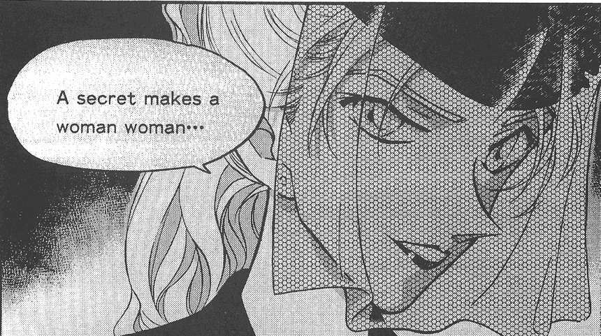
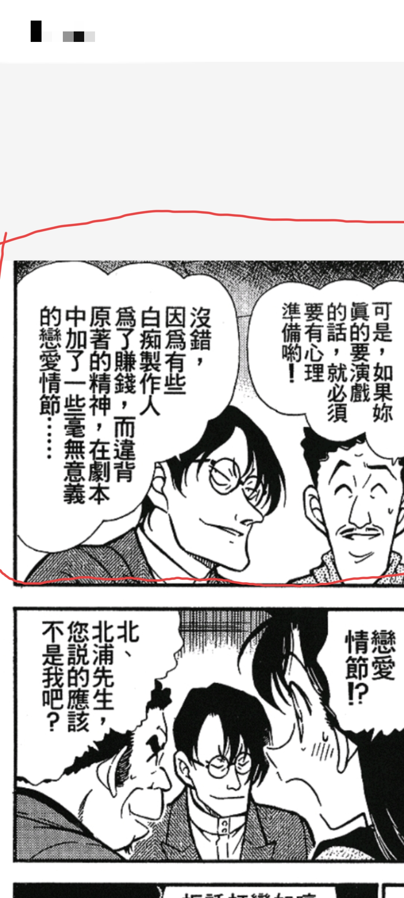

小栗谈到对贝新论的态度时提出，如果纽约篇隐藏剧情存在如此巨大的转折，那必然不可能只是为了拆新兰，必定有更大的意义。这里从一个主线党的角度提出一些看法
现在的贝魔剧情下，有些事情是不能动的，贝姐是个感性角色，她宠溺新一是无所求的；贝姐不能当坏人，她的罪孽会给光伟正的大男主承担一份；新一无权审判贝姐……她得当一个内心深处藏着柔情的好女人，这样才能和纽约篇被感化相照应
但倘若贝新论落地，贝姐宠溺新一的缘由被重新填写，贝姐完全可以是另一种角色。就像整个贝姐篇笼罩在朱蒂老师身上的人设迷雾在满月决战时被剥去，露出正直的本色一般，等到时机成熟，贝魔剧情给贝姐施加的人设迷雾消散，影后的真实面目完全可以和此前一千多话打下的刻板印象相悖。她可以是个彻头彻尾的坏女人
事实上，不看贝姐的内心戏和谜语人台词，只看贝姐的行为，这是一个典型的游走在正反阵营之间有恃无恐左右逢源的角色，还有瞒着双方的自己的小算盘，是典型的野心家模板，而这一切都在过去的一千多话里都被贝魔剧情的表象掩盖住了。联系黑方内斗论，看一眼短视狭隘的琴酒和酱油无能的朗姆，贝姐有心机有手腕，身旁就是乌丸，串个门能串到红方大本营，还有朗姆与琴酒都一无所知的小算盘，更是A药线核心角色之一。也许最后这位所有观众都默认成半个友军的角色才是最后登上舞台中央的最终反派
现在的贝魔剧情下，有些事情是不能动的，贝姐是个感性角色，她宠溺新一是无所求的；贝姐不能当坏人，她的罪孽会给光伟正的大男主承担一份；新一无权审判贝姐……她得当一个内心深处藏着柔情的好女人，这样才能和纽约篇被感化相照应
但倘若贝新论落地，贝姐宠溺新一的缘由被重新填写，贝姐完全可以是另一种角色。就像整个贝姐篇笼罩在朱蒂老师身上的人设迷雾在满月决战时被剥去，露出正直的本色一般，等到时机成熟，贝魔剧情给贝姐施加的人设迷雾消散，影后的真实面目完全可以和此前一千多话打下的刻板印象相悖。她可以是个彻头彻尾的坏女人
事实上，不看贝姐的内心戏和谜语人台词，只看贝姐的行为，这是一个典型的游走在正反阵营之间有恃无恐左右逢源的角色，还有瞒着双方的自己的小算盘，是典型的野心家模板，而这一切都在过去的一千多话里都被贝魔剧情的表象掩盖住了。联系黑方内斗论，看一眼短视狭隘的琴酒和酱油无能的朗姆，贝姐有心机有手腕，身旁就是乌丸，串个门能串到红方大本营，还有朗姆与琴酒都一无所知的小算盘，更是A药线核心角色之一。也许最后这位所有观众都默认成半个友军的角色才是最后登上舞台中央的最终反派

支持！想看这种反转

cy
名柯马三娘(笑) 想看坏女人的剧情
蹲一个贝姐真身是黑暗组织BOSS，选中新一当继承人“世纪王”
2023-11-06 06:52 | 贴吧用户_aA7UbGV:我丢，black，这是多少年前的剧了
反转理由这种东西，每个人的理解都不同，有人认为必须是要与主线相关才能反转，我本人认为在推理作品中，只要足够精彩就能反转，但我们又不是73，73怎么想我们怎么可能知道，我们也只能在漫画发现端倪。73在漫画中的确留下一句话，看下面图片，这句话明明插在任何篇章都可以，为什么偏偏插在纽约篇，中华美食街和纽约篇是连贯篇章，类似修学篇和寻找玛利亚篇一样，在这个充满迷雾的篇章里，插入这句话是想表达什么？我用创作思维想了一下，73这里像不像犯罪宣言?



听起来很带感，听起来像是基连扎比干掉德金自己当大boss，或者老太婆干掉基连自己主宰阿巴瓦空最后一战。这么说的话，青山或许真能写得出来
2023-11-05 23:22 | 露滴💧7532:马三娘七剑合璧干掉黑心虎，然后自己独吞麒麟
总不会“贝尔摩德”扮演的是“莫兰上校”的角色吧？
是的。我一直觉得贝新论最大的意义在于解放了工藤新一，也将贝姐当晚的行为动机更神秘化。
贝新论会使纽约篇：1）非常有回收的必要；2）能够通过工藤新一视角推动主线；3）给贝姐的行为逻辑打打补丁
至于贝新论里的新兰……只是顺道被踹了一脚了罢了。
贝新论会使纽约篇：1）非常有回收的必要；2）能够通过工藤新一视角推动主线；3）给贝姐的行为逻辑打打补丁
至于贝新论里的新兰……只是顺道被踹了一脚了罢了。
我放弃背心论了，现在看确实有巨大。猫腻但是，是秀新论
2024-01-03 10:33 | 202098◆:？2024-01-03 10:33 | 202098◆:回复 202098◆ :还有新说法？2024-01-03 19:44 | 贴吧用户_7CyUPtV:我个人支持贝新论贝兰论和秀新论都是真的，因为这几个也不冲突2024-01-03 19:51 | 贴吧用户_7CyUPtV:回复 202098◆ :【分析】新兰秀的双重错位：纽约篇拾遗 是这个帖子，感觉相当有道理 还有对应的b站视频 BV1uG41167sN 不过我觉得秀新论和贝新论并不是只能成立一个，二者可以同时成立2024-01-03 20:28 | 202098◆:回复 贴吧用户_7CyUPtV :不太一样吧，一个是错位，一个是换装2024-01-03 22:58 | 贴吧用户_7CyUPtV:回复 202098◆ :是的，所以感觉二者不冲突2024-01-04 00:06 | 小石头小小😈:我在贝新论那会就想到了秀新论的可能，可惜感觉太暴论2024-01-05 12:56 | 贴吧用户_0795E8E:回复 贴吧用户_7CyUPtV :我又看了一下，而且比较关键的其实是贝姐跟秀一是同时期角色，所以其实可以形成一个纽约三选一，哪个地方才是真正的新一，哪个是秀一，哪个是贝姐2024-01-05 12:57 | 贴吧用户_0795E8E:因为是同时期为了解决某些剧情问题制作出来的角色，假设这个问题为新兰

我也支持，要是boss亲信、secret woman只有这个逼格动不动就被感化这主线就真烂完了
有意思的推论，收藏一个，不论成不成真，至少可以拿来写同人
满月篇时期的BOSS绝对没那么简单
坏女人摩多摩多